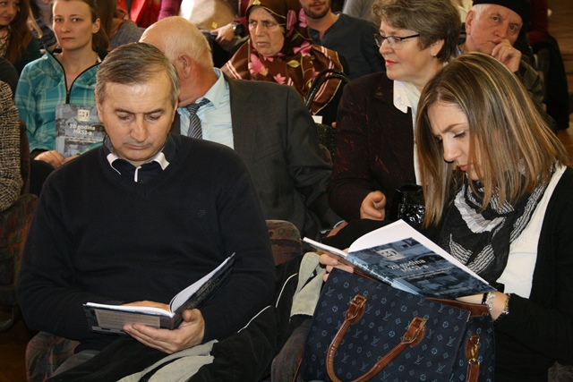
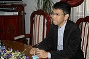
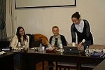
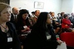
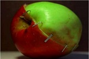
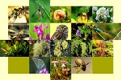

Na Univerzitetu u Sarajevu premijerno prikazan dokumentarni film o Višegradu
U prepunoj svečanoj sali Univerziteta u Sarajevu u četvrtak 17. marta 2016. godine premijerno je prikazan novi dokumentarni film u produkciji Outreach programa Međunarodnog krivičnog suda za bivšu Jugoslaviju (MKSJ) – „Zločini pred Tribunalom: Višegrad“.

Projekciji je prisustvovalo više od 120 gledalaca, među kojima su bili predstavnici udruženja žrtava, uključujući preživjele iz Višegrada, nevladinih organizacija, pravosudnih organa, diplomatskog hora te studenti i akademsko osoblje Univerziteta.
Prisutnima se obratio prof. dr. Muharem Avdispahić, dr. h. c., rektor Univerziteta u Sarajevu, te prilikom obraćanja istakao: „Naš je zadatak obrazovati slobodne ljude, slobodne građane u slobodnom demokratskom društvu. Brisanje iluzija o prošlosti od presudne je važnosti za našu budućnost. Neophodno je pomoći procese koji će ukinuti zabranu sjećanja na nedavnu prošlost i vratiti prava da mladi znaju historijske istine. Na koji način tom doprinosi Outreach program Međunarodnog krivičnog suda za bivšu Jugoslaviju, imamo priliku vidjeti na primjeru filma 'Zločini pred Tribunalom: Višegrad'. Film neminovno u nama iznova pobuđuje i pitanje odnosa čovjeka i kolektiviteta, individualne ljudskosti i etičke odgovornosti pojedinca i zajednice.“
Nekada čuven po Mostu Mehmed-paše Sokolovića na rijeci Drini, Višegrad je danas poznat kao mjesto u kojem su počinjeni neki od najstrašnijih zločina tokom rata u bivšoj Jugoslaviji. Kroz svjedočenja žrtava i očevidaca, presude sudskih vijeća te intervjue s protagonistima suđenja, film „Zločini pred Tribunalom: Višegrad“ pruža uvid u istrage, sudske postupke i činjenice koje je o ovim zločinima utvrdio MKSJ.
Film je izazvao snažne emocije gledalaca, koji su nakon projekcije imali brojna pitanja za predstavnika Outreach programa MKSJ-a i koautora filma, gospodina Petra Fincija. Jedan od preživjelih, gospodin Huso Kurspahić, čije je svjedočenje zabilježeno u filmu, zahvalio je Outreach programu na inicijativi da dokumentira zločine u Višegradu, istakavši da bi „bez Tribunala, odgovorni za zločine u Višegradu i dan-danas hodali slobodno.“ Dodao je da su ovakvi filmovi važni kako bi mlađe generacije koje nisu iskusile rat saznale šta se dešavalo jer „bez istine ne može biti stvarnog pomirenja“.
Osoblje Tribunala je iskoristilo ovu priliku da se zahvali žrtvama i svjedocima na njihovom nemjerljivom doprinosu sudskim postupcima koji su se vodili pred MKSJ-om u protekle dvije decenije.
„Zločini pred Tribunalom: Višegrad” je peti dugometražni dokumentarni film u produkciji Outreach programa, čiji je cilj približavanje rada MKSJ-a zajednicama na području bivše Jugoslavije. Rad Outreach programa velikodušno podržava Evropska unija.

Uspješna saradnja Univerziteta u Sarajevu i Univerziteta Sophia u Japanu

Održan sastanak bh. partnera u projektu „Trans2Work“

Održan Kick-off sastanak Radne grupe Upravnog odbora LNSS projekta u Brašovu (Rumunija)
Erasmus+ međunarodna kreditna mobilnost – info dan

Predavanje na Poljoprivredno-prehrambenom fakultetu o temi „GMO kontroverze“

Naučni skup sa međunarodnim učešćem o temi „Biodiverzitet i šumarstvo”